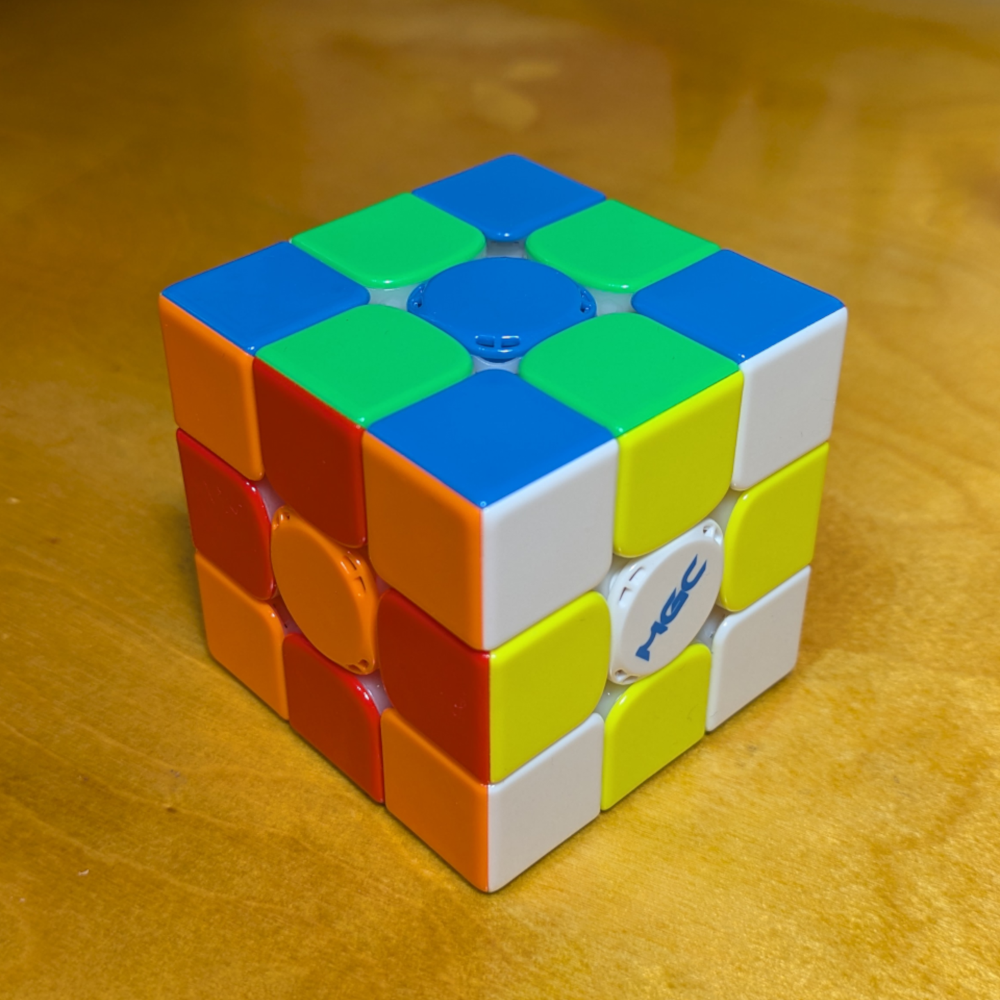
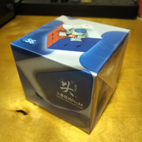
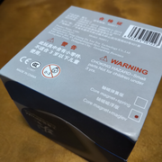
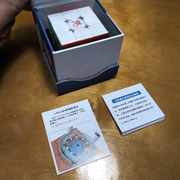
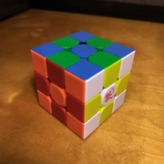
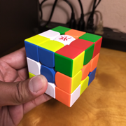
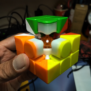

DaYan GuHong Pro M 56mm Maglev
{kind=link}

500011 (2023)
DaYan Guhong Pro M. If my historical cube collection begins with the original Guhong, it would be appropriate for this one to be the other endpoint, if at least for now. This particular cube is the 56 mm maglev version (it also exists in spring version, and also in 54 and 55 mm side lengths).
The box snaps closed magnetically, which is fun to play with, and the cube fits snugly within it. It does not come with any tools, as the tension system is hand-adjustable. It was also drenched in factory lube; I had to wipe it several times with a paper towel to get a good grip on it.
The turning feel is light and smooth comparable to the first DaYan Tengyun, but where the Tengyun felt soft (both like a whisper and heavily-trodden clay), the Guhong Pro M felt more solid (like smooth pebbles skipping across a pond). The maglev also makes the cube turn quickly. The cube comes standard with a transparent orange magnetic core that attracts the corner pieces, helping the layers stick the landing of every turn.
The stickerless colors complement each other, and are a bit darker than on the Tengyun, especially the green, which makes it seem more "grown up". Color recognition is a breeze on this cube. This time, the logo (rendered in red) is printed on as well. I also like the look of the glossy plastic on it, making it pop right next to the recent matte cubes.
The tension adjustment is done with a dial with two opposing raised nubs, which can be caught by two fingers or fingernails very easily. This cube does not have screws on the center axes; this makes me nervous about disassembling it too many times.
I like how the Guhong arrives at a certain "gentleness" that is similar to the Tengyun but by following a different path, one that takes it through things I like in other cubes (such as blockiness and strong magnets). Turning this puzzle is enjoyable and a stress-reliever, but it is perfectly capable during solves as well. I wish this were my first cube! All in all, a cube worthy to be called a successor to the original speedcube.
Original post: https://www.instagram.com/p/Cy9_qILrItW
Specifications
| Make | DaYan |
|---|---|
| Model | GuHong Pro |
| Edition/Variant | 56 mm Maglev |
| Model no. | 500011 |
| Release year | 2023 |
| Magnets (edge-corner) | 🧲 |
|---|---|
| Magnets (core) | 🧲 |
| Magnets (maglev) | 🧲 |
| Stickerless | ⭕ |
| Internals | Primary |
|---|---|
| Externals | Bright, glossy plastic |
| Adjustment | Hand-operated dial - tension |
| Remarks | (none) |
Photos
{kind=link}

Cube box
{kind=link}

Box bottom (with model number)
{kind=link}

Box contents
{kind=link}

Cube (checkerboard state)
{kind=link}

Cube (scrambled state)
{kind=link}

Magnetic ball core exposed
Collections
This cube is part of the following collections: